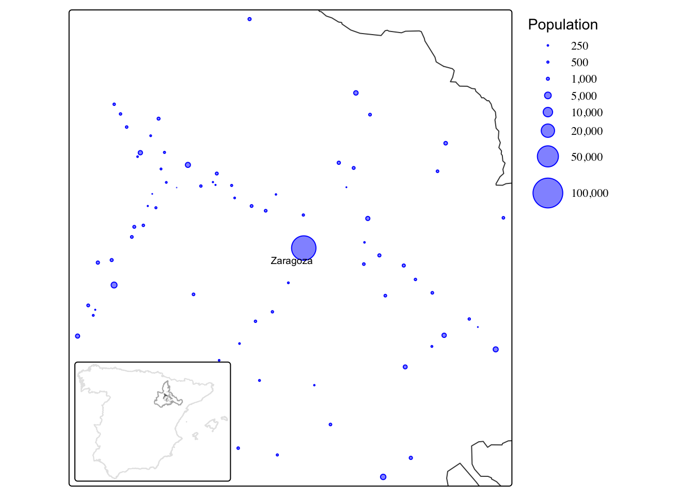
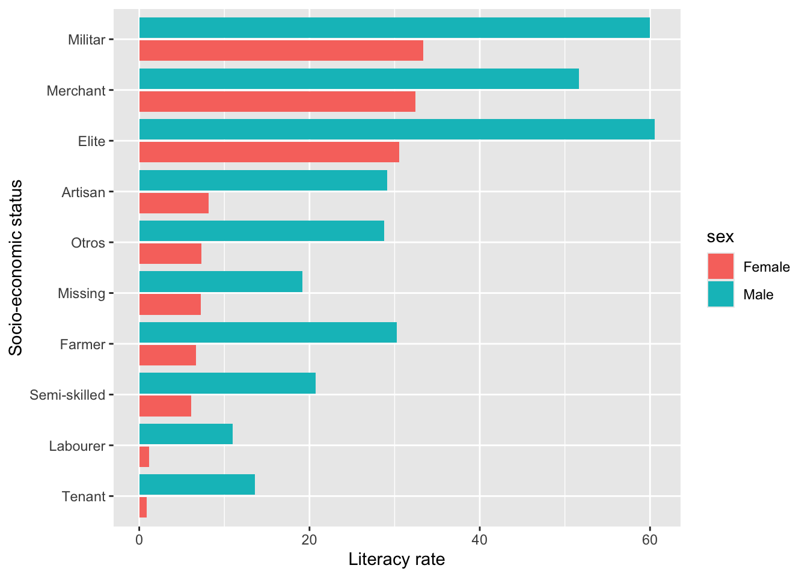
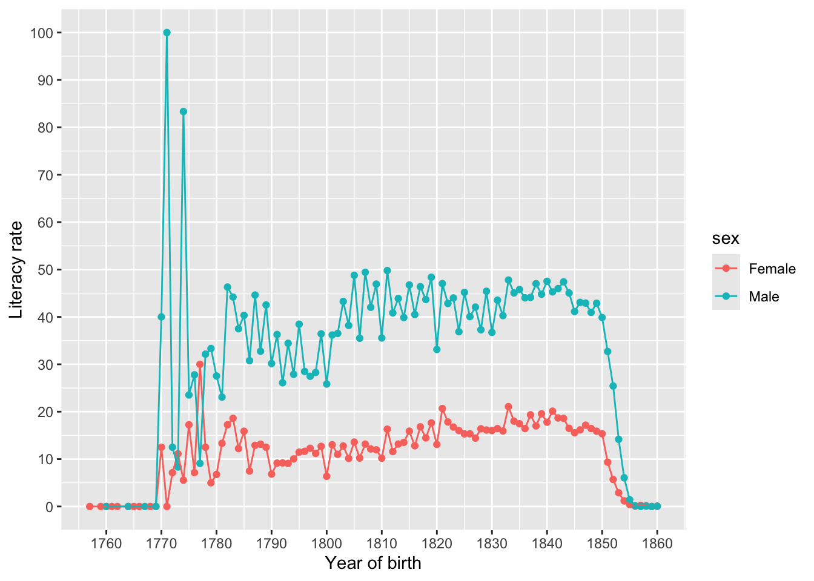
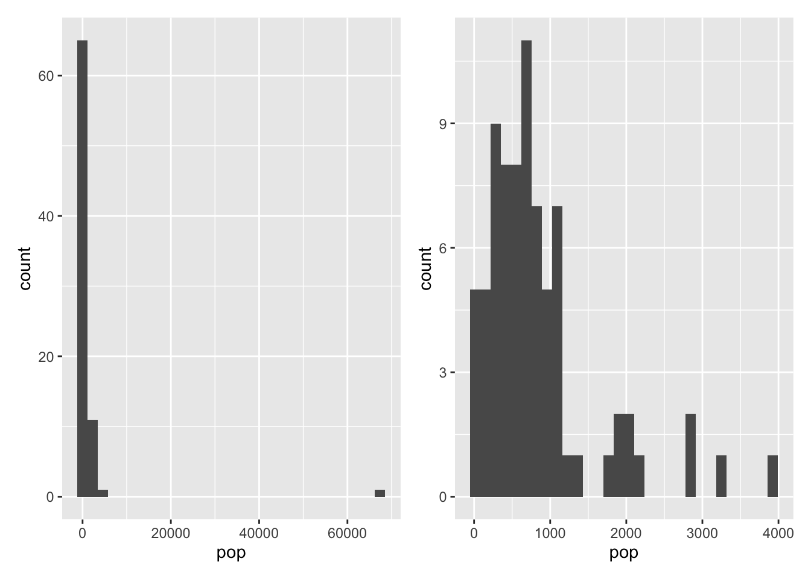
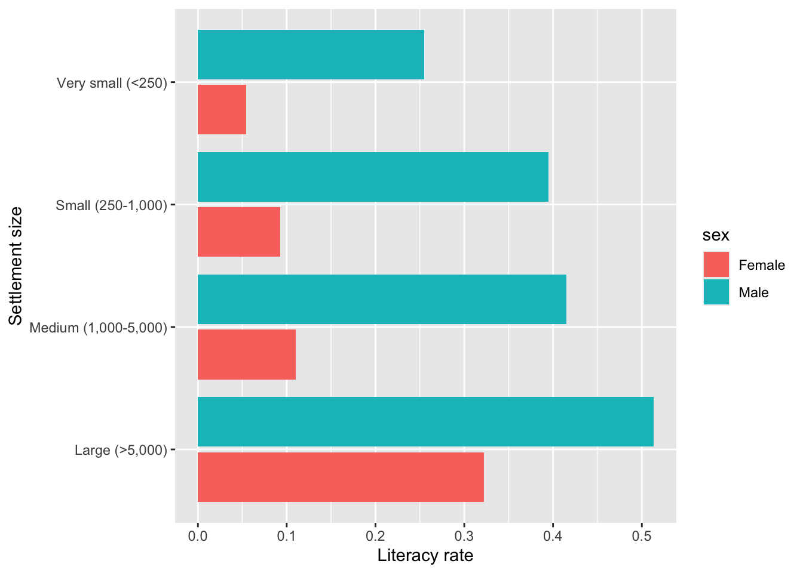
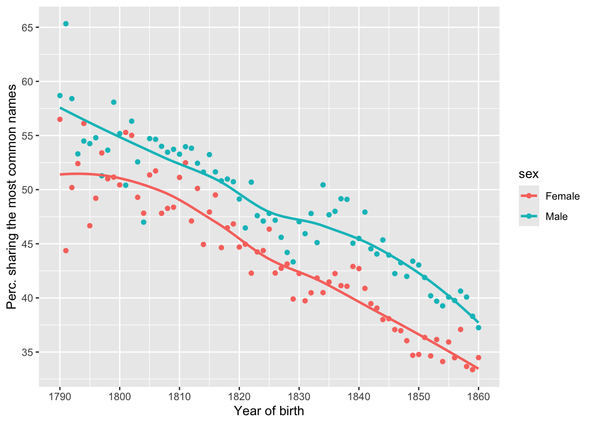
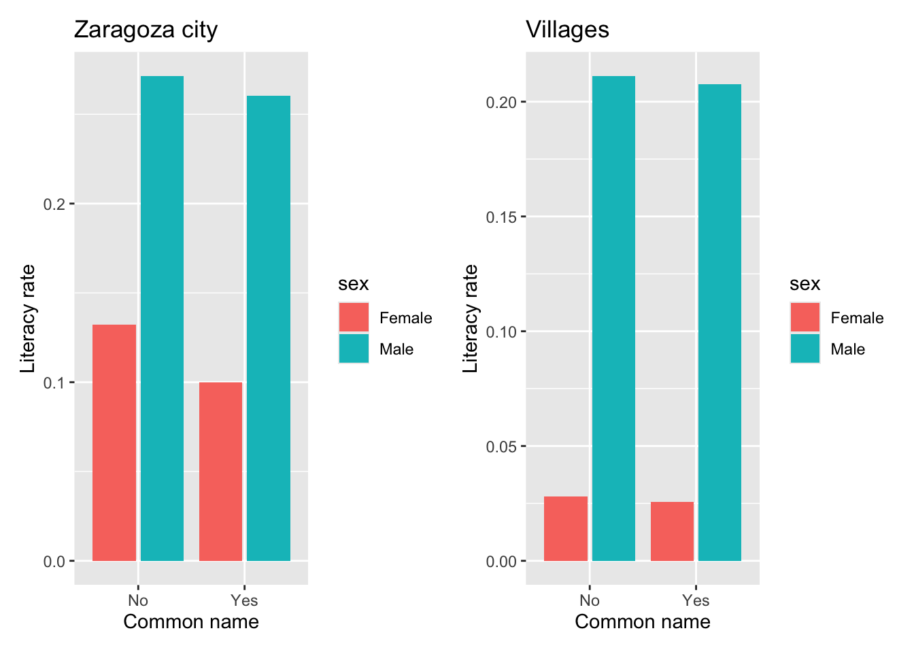
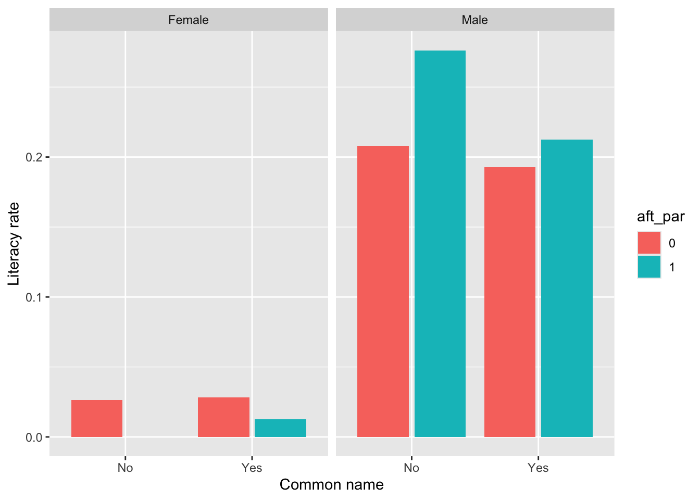
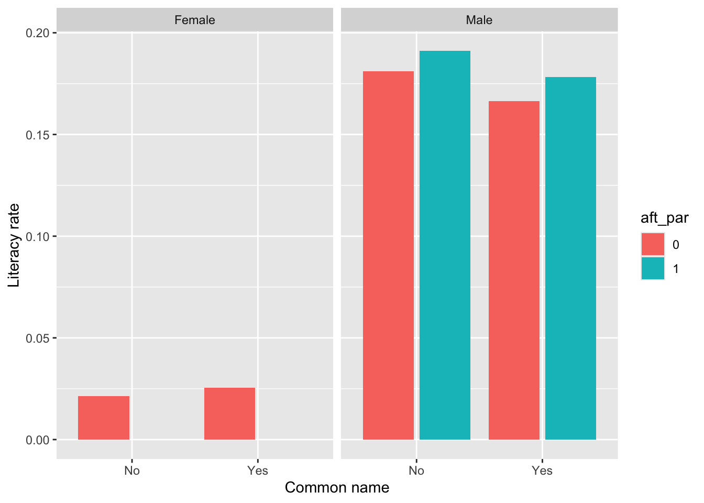

In-class: Qualitative dimensions
We will rely on census data for the province of Zaragoza (Spain) in 1860. The available data contains the individual records for all the population living in the 70 municipalities within 40 kilometers from the capital city of Zaragoza (see map below).1
In total, this data set contains information on 132,500 individuals: name and surname, place of residence, sex, age, marital status, household size, occupation, and so on. Note also that there is a field identifying each family and also who in that family is the father and the mother. We are mostly interested in learning more about the factors that help explaining the educational level of the population. In this regard, the source reports whether these individuals were able to read and/or write. For children, it also reports whether they are attending school or not but the coverage of this information is less consistent. Extract the information requested below and interpret your results as a html file using Quarto.
What fraction of the population is able to read and write. This information is contained in the variable write which has two categories: “NO” and “SI” (yes). Distinguish also by sex and socio-economic status. The latter is reported in the field ses which classifies each individual into wide occupational categories (their own or that of their parents or closer family members). Use a bar (column) plot to display these differences. Likewise, it would also be interesting to know whether the literacy rate changed over time. Focusing only on children, report also how literacy rates evolved as children grew older. Lastly, explore now whether some of the dimensions mentioned above also influence the likelihood that these children attended school or not.
Would you characterize this region as rural? How large is the biggest city and the smallest? What is the average settlement size? What about median size? Can you display the distribution of locations by size? Coming back to our original question about education, are there differences in literacy rates between rural and urban areas?
What is the most common name in our case study? List the 10 most common names for both men and women. Have naming practices changed over time? You can, for instance, check whether these names the same in the early 1800s and in the 1850s or whether the percentage of people bearing the most common names changed over time.
Focusing only on children aged 6-10, explore whether names can provide information about the cultural attitudes of the parents and the importance they attached to educating their children. The way you can extract information from names is quite varied. For instance, you can identify those individuals bearing very common names (or you can compute a continuous measure: what is the fraction of the population bearing that name). Alternatively, you can identify those names that signal particular attitudes, such as religious or political names (i.e. after saints, biblical figures, kings or other political or religious symbols). Likewise, if you focus on children, you can also identify who is named after their parents (note that we have fields identifying the family and who is the father and the mother).
You can learn more about these issues and about how to present this type of analysis by checking the two first sections (pages 1-10) in the article What was in a name? Culture, naming practices and education in the past (especially pages 1-10).
<!– # Results
- What fraction of the population is able to read and write. This information is contained in the variable write which has two categories: “NO” and “SI” (yes). Distinguish also by sex and socio-economic status. The latter is reported in the field ses which classifies each individual into wide occupational categories (their own or that of their parents or closer family members). Use a bar (column) plot to display these differences. Likewise, it would also be interesting to know whether the literacy rate changed over time. Focusing only on children, report also how literacy rates evolved as children grew older. Lastly, explore now whether some of the dimensions mentioned above also influence the likelihood that these children attended school or not.
We can start by reporting the number of people who were able to read and write, information stored in the field write, simply using count() and then computing a fraction based on that number and the total number of observations. The latter can be retrieved using the function sum() and indicating to sum the values in the field n (which has in turn been computed using count(). We then round the resulting value up to 3 decimal places.2
data |>
count(write) |>
mutate(frac = n/sum(n)) |>
mutate(frac = round(frac, 3))# A tibble: 3 × 3
write n frac
<chr> <int> <dbl>
1 NO 100373 0.758
2 SI 31960 0.241
3 <NA> 167 0.001We are now going to compute it for males and females separately. We could do it using count() but we can also explore how to do it creating a dummy variable that assigns the values 1 or 0 depending on whether the variable write equals “SI” (yes) or not. We do that and store the results by over-writting the object data. It is always advisable to check what we have done. To do so, we select the columns containing the info we are interested in (we add also name and sex to provide a bit of context).
data <- data |>
filter(!is.na(sex)) |>
mutate(d_write = if_else(write=="SI", 1, 0))
data |>
select(name, sex, write, d_write)# A tibble: 132,499 × 4
name sex write d_write
<chr> <chr> <chr> <dbl>
1 FELIPE Male NO 0
2 MARIA Female NO 0
3 HIPOLITO Male NO 0
4 HIPOLITO Male NO 0
5 ANTONIA Female NO 0
6 MATEO Male NO 0
7 FERNANDA Female NO 0
8 MATEO Male NO 0
9 MANUELA Female NO 0
10 LUISA Female NO 0
# ℹ 132,489 more rowsIt seems the dummy variable d_write does what we wanted. We then have many 0s and 1s. Computing the average literacy by sex therefore implies computing the mean of this variable, using group_by() to do it for each sex separately.
data |>
group_by(sex) |>
summarise(lit_rate = 100*mean(d_write, na.rm = TRUE))# A tibble: 2 × 2
sex lit_rate
<chr> <dbl>
1 Female 12.7
2 Male 34.9Literacy rates are generally low but we can see that most women were illiterate. Let’s now explore how these values may differ by socio-economic status. The variable ses relies on the occupation held by the head of the family and classifies each individual according this information into groups (you can use count() to explore this field on your own). To make things easier, we are just going to focus on males and compute their literacy rates by ses:
data |>
filter(sex=="Male") |>
group_by(ses) |>
summarise(lit_rate = 100*mean(d_write, na.rm = TRUE))# A tibble: 11 × 2
ses lit_rate
<chr> <dbl>
1 Artisan 52.6
2 Elite 70.6
3 Farmer 35.8
4 Labourer 12.1
5 Merchant 77.6
6 Militar 54.7
7 Missing 31.7
8 Otros 53.0
9 Semi-skilled 31.7
10 Tenant 21.0
11 Unknown/No occ. (unskilled) 20.2The results clearly show how class shaped educational achievements: while more than 70 per cent of the individuals in the upper socio-economic strata (i.e. elites, merchants) were able to read and write, only 12 per cent of those classified as labourers did (this category includes those who did not have access to land or other property and therefore had to sell their work for a living). Note that here we are considering all males, regardless of age. You could explore how these results would change if you narrow the analysis to particular age-groups. Here, we are now going to do it for children aged 6-10, compute it separately for boys and girls and plot the results. The coding is a bit more involved mainly because the graph looks better if we re-order the categories in ses, so they are depicted from highest to lowest literacy rate. The socio-economic disparities are also clear here. Girls from the lowest backgrounds were especially disadvantaged in terms of literacy.
data |>
filter(age>=6 & age<=10) |>
group_by(sex, ses) |>
summarise(lit_rate = 100*mean(d_write, na.rm = TRUE)) |>
1 mutate(ses = fct_reorder(
ses,
lit_rate)) |>
ggplot(aes(x = ses, y = lit_rate, fill = sex)) +
geom_col(position = "dodge2") +
coord_flip() +
labs(x = "Socio-economic status", y = "Literacy rate")- 1
-
The function
fct_reorder()re-orders the categories in ses according to the values computed in lit_rate. Note that we are also reporting results by sex, so the ordering happens within the first category in sex, which is “Female”. Ordering by “Male” literacy rates would bit a little bit more coding.

We now have a better idea of how literacy rates looked like in mid-19th-century Spain. Let’s now see whether literacy rates were improving or not. We don’t have several censuses conducted a different periods to compare literacy rates but we have the age of these individuals. We can actually easily infer their year of birth by substracting it from the census year (1860). This procedure is not perfect for assessing change over time because of selection bias: those who are older have more chances of not being observed in the 1860 census due to survival or out-migration (older people also have more time to become literate). Implementing this exercise will however give us useful information: better than doing nothing providing we are cautious when interpreting the results. The code below first creates a field with the estimated birth year and then computes the average literacy rates of all individuals born each year (distinguishing also by sex).
data |>
mutate(birth_year = 1860-age) |>
group_by(birth_year, sex) |>
summarise(lit_rate = 100*mean(d_write, na.rm = TRUE)) |>
ggplot(aes(x = birth_year, y = lit_rate, col = sex)) +
geom_point() +
geom_line() +
scale_x_continuous("Year of birth", breaks = seq(1760, 1860, 10)) +
scale_y_continuous("Literacy rate", breaks = seq(0, 100, 10))
The results are very interesting: literacy rates appear to show some improvements in some periods followed by stagnation (or even decline) in others. This may reflect the circumstanced that plagued the late 18th century and the first half of the 19th century (economic crises, wars, revolutions, etc.). We should nonetheless be aware of the limitations mentioned above. Migrants, on average, tend to be more literate than those who stayed behind, so these trends might be contaminated by that (note also that while Zaragoza tend to receive migrants, the villages around tend to send them). Notice also the spikes in the earlier periods. This is mostly noise because we have very few observations who are very old, so the fact that they are literate or not changes year-to-year due to chance.
The graph can nonetheless be improved. On the one hand, we can exclude the observations in the earliest periods because we have very few (i.e. before 1775) and those from the 1850s (or even a bit ealier) because they are still children and did not have enough time to become literate (the comparison is therefore unfair). On the other hand, we can overlap a smooting trend using geom_smooth() to better grasp the underlying long-term trends. Try it yourself.
As shown above, exploring literacy children literacy rates would just imply filtering by age; you can perform other types of analysis as those above yourself. Here we show how literacy rates evolved as boys and girls grew up (from 4 to 14), something that is also somewhat visible in the right-hand side of the previous graph:
data |>
filter(age>=4 & age<=14) |>
group_by(age, sex) |>
summarise(lit_rate = 100*mean(d_write, na.rm = TRUE)) |>
ggplot(aes(x = age, y = lit_rate, col = sex)) +
geom_point() +
geom_line() +
scale_x_continuous("Age", breaks = seq(4, 14, 1)) +
scale_y_continuous("Literacy", breaks = seq(0, 45, 5)) +
theme_minimal()
The results illustrate how the learning process is faster for boys. By age 10, however, very few extra boys and girls got literate. This may reflect the time when they dropped out of school due to their working responsibilities in the field or at home. The disparities between boys and girls are probably explained by the different value that parents (and society in general) put into educating their sons and daughters. The curriculum at school itself reflected these values: while boys were expected to learn to read and write, arithmetic and other subjects (i.e. geography and history), girls were only expected to learn how to read (so they could read the Bible) and devoted a lot of time to learn houseskills (i.e. sewing, embroidery, etc.). Female schoolteachers were also significantly less educated than their male counterparts. Exploring what shaped the fraction of children attending school helps shedding more light on these issues. This information is contained in the variable school, which is a dummy variable with the value 1 or 0 depending whether the child was attending school or not. The code below computes the percentage of boys and girls aged 6-10 that were attending school.
data |>
filter(age<=6 & age<=10) |>
group_by(sex) |>
count(school) |>
mutate(perc = 100*n/sum(n))# A tibble: 4 × 4
# Groups: sex [2]
sex school n perc
<chr> <dbl> <int> <dbl>
1 Female 0 9002 94.7
2 Female 1 505 5.31
3 Male 0 9099 91.6
4 Male 1 836 8.41The schooling enrolment that arises from this source is really low. The problem with this variable though is that this information was contained in the field occ (occupation) but was not reported systematically. There are locations that, from other sources, we know had a school (and children attending it) but the census does not report any children (or very few) doing so. This obviously infra-estimates the real schooling enrolment rate. A potential solution would be to identify those locations which recorded this information consistently (that is, checking whether the numbers arising from the census are similar to those reported from other sources) and restrict the analysis only to those municipalities. It is possible though that the locations that recorded schooling systematically are different from those who did not, so the results from analysing this sample may not be representative of all the locations in the full original sample. You could however test whether these two groups of villages are similar based on other features (i.e. size, occupational structure, literacy rates, etc.). If they are, you could argue that the results from analysing that subsample are representative of the whole area. We are not following this path here but you can check the article referenced above to learn more about this procedure and the actual enrolment rates (pages 9-10).
- Would you characterize this region as rural? How large is the biggest city and the smallest? What is the average settlement size? What about median size? Can you display the distribution of locations by size? Coming back to our original question about education, are there differences in literacy rates between rural and urban areas?
The map above already suggests that this region is dominated by a medium-size city (at least by mid-19th-century standards) which is surrounded by small villages. We can be more precise by just counting the number of observations living in each municipality (munic) or settlement (settlement):
data |>
count(settlement, sort = TRUE)# A tibble: 78 × 2
settlement n
<chr> <int>
1 ZARAGOZA 67400
2 EPILA 3926
3 BELCHITE 3296
4 ALAGON 2890
5 PINA DE EBRO 2840
6 ZUERA 2190
7 FUENTES DE EBRO 2090
8 PEDROLA 2053
9 VILLAMAYOR DE GALLEGO 1922
10 CALATORAO 1909
# ℹ 68 more rowsThe largest location, Zaragoza, has almost 70,000 inhabitants. The other ones are however quite small. The following computes the mean and median size, as well as the smallest and the largerst settlement (we already know the latter figure).
data |>
group_by(settlement) |>
summarise(pop = n()) |>
summarise(mean = mean(pop, na.rm = TRUE),
median = median(pop, na.rm = TRUE),
min = min(pop, na.rm = TRUE),
max = max(pop, na.rm = TRUE))# A tibble: 1 × 4
mean median min max
<dbl> <dbl> <int> <int>
1 1699. 684. 17 67400It is noteworthy how the mean is much higher than the median. This is because this distribution is quite skewed: most location are relatively small but Zaragoza, the capital city, is way bigger. The average reflects this extreme value. The median, however, is not affected by this type of outlier since it splits the distribution into two and takes the value of the observation that sits in the middle (regardless the values at the top or the bottom). We can have a sense of the full distribution by plotting a histogram or a kernel density graph. Given how different the city of Zaragoza is from the rest of locations, the following creates two histogram: one with all the locations and another one excluding Zaragoza. We are using the package patchwork to depict these two plots side by side. Note that adjusting the bin argument changes the way the plots look like (there is no perfect solution here but it is up to the researcher to balance between precision and noise).
p1 <- data |>
group_by(settlement) |>
summarise(pop = n()) |>
ggplot(aes(x = pop)) +
geom_histogram(bin = 50)
p2 <- data |>
group_by(settlement) |>
summarise(pop = n()) |>
filter(pop<20000) |>
ggplot(aes(x = pop)) +
geom_histogram(bin = 50)
library(patchwork)
p1 + p2
Coming back to our original question about education, how do we assess whether there were differences in literacy rates between rural and urban areas? There are different ways of doing this. One possibility is to compute both population size and literacy rates for each settlement. We can do this for all the population of distinguishing by sex. Let’s do the latter, so it enables a more refined analysis. As you can see, the code below computes the number of men and women living in each municipality and their literacy rate, which is basically the average of the dummy variable d_write. An alternative would have been to also compute the number of literate individuals, so we could divide that number by the total population to obtain the literacy rate. We store the results in a new object called munic.
munic <- data |>
group_by(settlement, sex) |>
summarise(pop = n(),
lit = mean(d_write, na.rm = TRUE))
munic# A tibble: 156 × 4
# Groups: settlement [78]
settlement sex pop lit
<chr> <chr> <int> <dbl>
1 AGUILAR DE EBRO Female 32 0
2 AGUILAR DE EBRO Male 29 0.0345
3 ALAGON Female 1438 0.0605
4 ALAGON Male 1452 0.176
5 ALCALA DE EBRO Female 161 0.0745
6 ALCALA DE EBRO Male 174 0.241
7 ALFAJARIN Female 492 0.0772
8 ALFAJARIN Male 558 0.289
9 ALFAMEN Female 273 0.0330
10 ALFAMEN Male 330 0.155
# ℹ 146 more rowsAlthough we could continue based on the population of each sex, we could can create an additional column showing the total population of both sexes before running the analysis. Notice that doing this involves using the function group_by() but relying on mutate() instead of summarise(). As shown below, this procedure creates a new column that sums up the values in a particular column (pop here) within each category for the variable in group_by()(settlement here).
munic <- munic |>
group_by(settlement) |>
mutate(tot_pop = sum(pop))
munic# A tibble: 156 × 5
# Groups: settlement [78]
settlement sex pop lit tot_pop
<chr> <chr> <int> <dbl> <int>
1 AGUILAR DE EBRO Female 32 0 61
2 AGUILAR DE EBRO Male 29 0.0345 61
3 ALAGON Female 1438 0.0605 2890
4 ALAGON Male 1452 0.176 2890
5 ALCALA DE EBRO Female 161 0.0745 335
6 ALCALA DE EBRO Male 174 0.241 335
7 ALFAJARIN Female 492 0.0772 1050
8 ALFAJARIN Male 558 0.289 1050
9 ALFAMEN Female 273 0.0330 603
10 ALFAMEN Male 330 0.155 603
# ℹ 146 more rowsWe are now in the position of comparing rural and urban locations. We can for instance compare literacy rates in the city of Zaragoza against all the other locations. Let’s go a little beyond that a classify each locations according to different sizes, so we can compute literacy rates for different groups. Within mutate() we use case_when() here but we could have also used cut().3
munic |>
mutate(size = case_when(
pop < 250 ~ "Very small (<250)",
pop < 1000 ~ "Small (250-1,000)",
pop < 5000 ~ "Medium (1,000-5,000)",
pop >= 5000 ~ "Large (>5,000)")) |>
group_by(size) |>
summarise(lit = mean(lit, na.rm = TRUE))# A tibble: 4 × 2
size lit
<chr> <dbl>
1 Large (>5,000) 0.326
2 Medium (1,000-5,000) 0.162
3 Small (250-1,000) 0.147
4 Very small (<250) 0.117Zaragoza, the only location above 5,000 inhabitants, enjoyed significantly higher literacy rates. The differences between the other locations are much smaller but it seems that small villages still suffered a penalty. Two considerations though. On the one hand, we did not distinguish by sex above. Including sex in the group_by() function would make the trick and provide and more granular result. On the other hand, this type of locations may differ in their socio-economic structures, so literacy rates may not only reflect the “rural” dimension but the fact that these locations are different in terms of the relative number of children and elderly population, the type of occupations, and so on. We could try to narrow down the analysis to compare more homogenous groups and therefore shed more light on the “rural” factor. We therefore replicate the above but focusing only on a relatively homogenous group: individuals aged 16-50 classified as belonging to the “Farmer” socio-economic status (we could obviously try to narrow this down even further but this suffice as an illustration). Instead of a table, the results are now presented as a bar plot. Note that we compute the total population before filtering (otherwise, the number of observations in each location will be much smaller).
data |>
group_by(settlement) |>
mutate(pop = n()) |>
mutate(size = case_when(
pop < 250 ~ "Very small (<250)",
pop < 1000 ~ "Small (250-1,000)",
pop < 5000 ~ "Medium (1,000-5,000)",
pop >= 5000 ~ "Large (>5,000)")) |>
filter(age>=16 & age<=50 & ses=="Farmer") |>
group_by(size, sex) |>
summarise(lit = mean(d_write, na.rm = TRUE)) |>
mutate(size = reorder(size, desc(lit))) |>
ggplot(aes(x = size, y = lit, fill = sex)) +
geom_col(position = "dodge2") +
coord_flip() +
labs(x = "Settlement size", y = "Literacy rate")
The results show that, even when we focus on a relatively homogenous group (individuals aged 16-50 classified as belonging to the “Farmer” socio-economic group), the disparities in literacy rates persist. However, they are not as striking for men as for women. Rural areas appear to be specially detrimental to female education.
- What is the most common name in our case study? List the 10 most common names for both men and women. Have naming practices changed over time? You can, for instance, check whether these names the same in the early 1800s and in the 1850s or whether the percentage of people bearing the most common names changed over time.
The name of each individual in the data set is reported in the filed name. The code below reports the 10 most common names for males and females separately. As shown above, we create two different plots and depict them side by side using the package patchwork (we don’t need to load it because we already did above). When constructing individual plots, R automatically adjust the \(y\) and \(x\) axes to the existing variation. Here we want to compare two plots that are measuring the same thing, so it is advisable to have the same range in both. We therefore use expand_limits() to expand the \(y\)-axis artificially to y = 14, which (roughly) corresponds to the percentage of women sharing the most common name. This allows making the contrast between the two distributions (male and female) clearer, especially the widespread use of the name Maria.
p1 <- data |>
filter(sex=="Male" & !is.na(name)) |>
count(name, sort = TRUE) |>
mutate(perc = 100*n/sum(n)) |>
slice_head(n = 10) |> # selecting to show only top 10 words
mutate(name = reorder(name, -desc(n))) |> # ensuring descending order
ggplot(mapping = aes(x = name, y = perc)) +
geom_col(width = 0.7, col = "blue", fill = "blue", alpha = .5) +
ggtitle("Males") + xlab("") +
expand_limits(y = 14) +
scale_y_continuous("Relative frequency (%)", breaks = seq(0, 14, by = 2)) +
theme(axis.text.y = element_text(size = 7),
plot.title = element_text(hjust = 0.5)) +
coord_flip() + theme_minimal()
p2 <- data |>
filter(sex=="Female" & !is.na(name)) |>
count(name, sort = TRUE) |>
mutate(perc = 100*n/sum(n)) |>
slice_head(n = 10) |> # selecting to show only top 25 words
mutate(name = reorder(name, -desc(n))) |> # ensuring descending order
ggplot(mapping = aes(x = name, y = perc)) +
geom_col(width = 0.7, col = "blue", fill = "blue", alpha = .5) +
ggtitle("Females") + xlab("") +
expand_limits(y = 14) +
scale_y_continuous("Relative frequency (%)", breaks = seq(0, 14, by = 2)) +
theme(axis.text.y = element_text(size = 7),
plot.title = element_text(hjust = 0.5)) +
coord_flip() + theme_minimal()
p1 + p2
In order to compare whether naming practices have changed over time we could compare the list of most common names in two periods (i.e. born in the 1800s and the 1850s). Alternatively, we can compute the percentage of the population sharing the most common 5 or 10 names in different periods. This can be understood as a measure of tradition: parents sticking to the common norm.
data |>
filter(!is.na(name) & age<=70) |>
mutate(birth_year = 1860-age) |>
group_by(sex, birth_year) |>
count(name, sort = TRUE) |>
mutate(perc = 100*n/sum(n)) |>
slice_head(n = 10) |>
summarise(total = sum(perc)) |>
ggplot(aes(x = birth_year, y = total, col = sex)) +
geom_point() + geom_smooth(se = FALSE) +
scale_y_continuous("Perc. sharing the most common names", breaks = seq(30, 65, by = 5)) +
scale_x_continuous("Year of birth", breaks = seq(1790, 1860, by = 10)) 
The results show that the importance of sticking to tradition, in terms of naming practices, have changed over time. In the late 18th- and early 19th-century, more than 50 per cent of the population shared the 10 most common names. This percentage declined over time to reach around 35 per cent of the population by 1860. The percentage is always higher for males, suggesting that tradition played a slightly more important role when naming boys than girls.
- Focusing only on children aged 6-10, explore whether names can provide information about the cultural attitudes of the parents and the importance they attached to educating their children. The way you can extract information from names is quite varied. For instance, you can identify those individuals bearing very common names (or you can compute a continuous measure: what is the fraction of the population bearing that name). Alternatively, you can identify those names that signal particular attitudes, such as religious or political names (i.e. after saints, biblical figures, kings or other political or religious symbols). Likewise, if you focus on children, you can also identify who is named after their parents (note that we have fields identifying the family and who is the father and the mother).
Following with our previous example, we can classify children depending on whether they bear a common name or not and then compute their respective literacy rates.4 Given how different Zaragoza is from the rest of the sample, we can also run the analysis separately for these two subsamples. We first create two objects with the most common names for boys and girls, bind them together and create an additional column identifying them as a dummy variable would (0/1)
boys <- data |>
filter(!is.na(name) & age>=6 & age<=10 & sex=="Male") |>
count(name, sort = TRUE) |>
slice_head(n = 10)
girls <- data |>
filter(!is.na(name) & age>=6 & age<=10 & sex=="Female") |>
count(name, sort = TRUE) |>
slice_head(n = 10)
common <- bind_rows(boys, girls) |>
mutate(common = 1) |>
select(name, common)We can now take the original data set with all the children aged 6-10 and identify which one are bearing the most common names by matching them to this object using the column name, which is present in both objects data and common, as the matching field. The code below does that and checks the results by selecting only the fields name and common.
data |>
filter(!is.na(name) & age>=6 & age<=10) |>
full_join(common, by = "name") |>
select(name, common)# A tibble: 10,886 × 2
name common
<chr> <dbl>
1 FELIPE NA
2 ANGELA NA
3 VICENTE NA
4 VALERO NA
5 BIENVENIDO NA
6 BENITO NA
7 MARIANO 1
8 ANGEL NA
9 SEBASTIAN NA
10 MANUELA 1
# ℹ 10,876 more rowsAs you can see above, we have 10,886 rows, that is, children aged 6-10. Their names are classified as 1 in the column common if they corresponded to the names we stored in the object common. When they do not, they are assigned the value NA, meaning that the “join” did not find a corresponding match. The results are what we were looking for: the most common names, such as “MARIANO” or “MANUELA” have been assigned a “1”. We can therefore continue with the analysis. To have a proper dummy variable, the other children not bearing a common name should be classified as “0” before computing the corresponding literacy rates. We therefore recycle part of the code above:
children <- data |>
filter(!is.na(name) & age>=6 & age<=10) |>
full_join(common, by = "name") |>
mutate(group = if_else(is.na(common), "No", "Yes"))
children |> select(name, common, group)# A tibble: 10,886 × 3
name common group
<chr> <dbl> <chr>
1 FELIPE NA No
2 ANGELA NA No
3 VICENTE NA No
4 VALERO NA No
5 BIENVENIDO NA No
6 BENITO NA No
7 MARIANO 1 Yes
8 ANGEL NA No
9 SEBASTIAN NA No
10 MANUELA 1 Yes
# ℹ 10,876 more rowsWe can now create two plots comparing the ability to read and write of children depending on whether they bear common names or not for those living in urban and rural areas.
urban <- children |>
filter(settlement=="ZARAGOZA") |>
group_by(group, sex) |>
summarise(lit = mean(d_write, na.rm = TRUE)) |>
ggplot(aes(x = group, y = lit, fill = sex)) +
geom_col(position = "dodge2") +
labs(x = "Common name", y = "Literacy rate") +
ggtitle("Zaragoza city")
rural <- children |>
filter(settlement!="ZARAGOZA") |>
group_by(group, sex) |>
summarise(lit = mean(d_write, na.rm = TRUE)) |>
ggplot(aes(x = group, y = lit, fill = sex)) +
geom_col(position = "dodge2") +
labs(x = "Common name", y = "Literacy rate") +
ggtitle("Villages")
urban + rural
The results show that bearing a common name is related to lower literacy rates, especially in urban areas and specially for girls. These results are however tentative and may be influenced by other factors, such as birth order, social class, and so on, so the analysis should be more nuanced.
Another factor that might be influencing the results is the fact that having a common name may reflect two different things. These names were common because families were sticking to shared norms. Religion was an important factor and many families chose religious names (i.e. Mary). Naming after family members was also very common and this tendency reinforces the importance of particular names because they are transmitted across generations. Having a common name may therefore reflect different things about the importance that the family may have attached to education depending whether the name is common because it is religious or because it is a family name. It is very difficult to identify religious names in Catholic countries because the Church prescribed that all names should be religious (after saints). We can however identify which children were named after their parents using the info in fam_id, father and mother. While the former is a family id, the other two identify who in that family is the father and the mother (if any; they could be dead or absent).
The code below creates two objects with the names of the parents (mother and father) in each family.
fathers <- data |>
filter(father==1) |>
select(fam_id, name) |>
rename(fath_name = name)
mothers <- data |>
filter(mother==1) |>
select(fam_id, name) |>
rename(moth_name = name)
fathers# A tibble: 26,650 × 2
fam_id fath_name
<chr> <chr>
1 00800000001ZFAM1 HIPOLITO
2 00800000002ZFAM1 MATEO
3 00800000003ZFAM1 MANUEL
4 00800000004ZFAM1 MARIANO
5 00800000005ZFAM1 LORENZO
6 00800000006ZFAM1 TOMAS
7 00800000007ZFAM1 ANTONIO
8 00800000009ZFAM1 EUGENIO
9 00800000010ZFAM1 GREGORIO
10 00800000011ZFAM1 GREGORIO
# ℹ 26,640 more rowsAs you can see from the checking the results above, we have an object with the family identifies (fam_id) and the name of the father (or the mother). We can now join these objects to our original data set or that with the children (and all the info), so we can have that additional column with the parents name. Note that we have changed the name of the field from name to fath_name (or moth_name) to distinguish it from the field name itself that is in the original data set. As always, we check our results.
children <- children |>
1 left_join(fathers, by = "fam_id") |>
left_join(mothers, by = "fam_id")
children |>
select(name, fath_name, moth_name)- 1
-
We employ
left_join(), instead offull_join(), because we are only interested in joining the children with their parents.
# A tibble: 10,886 × 3
name fath_name moth_name
<chr> <chr> <chr>
1 FELIPE <NA> <NA>
2 ANGELA TOMAS MICAELA
3 VICENTE GREGORIO GREGORIA
4 VALERO FRANCISCO MARIA
5 BIENVENIDO MARIANO TERESA
6 BENITO <NA> <NA>
7 MARIANO JULIAN MARIA
8 ANGEL MANUEL FRANCISCA
9 SEBASTIAN MANUEL FRANCISCA
10 MANUELA FRANCISCO ESTEFANIA
# ℹ 10,876 more rowsAs evident above, we now have the child’s name together with his/her parents in the same data set (NA meaning that the census did not report a father or a mother in that family). We can now create a variable identifying which children are named after their parents.
children <- children |>
mutate(aft_par = if_else(name==fath_name | name==moth_name, 1, 0))
children |>
count(aft_par)# A tibble: 3 × 2
aft_par n
<dbl> <int>
1 0 7961
2 1 623
3 NA 2302As expected, we could not identify the name of the parents of an important fraction of children because they were not present in the census (either absent or dead). As shown above, some children were named after their parents. Let’s break this out by sex (excluding those we could not identify). Interestingly, this naming practice differed quite significantly by sex: while almost 10 per cent of boys were named after their fathers, only 5 per cent of girls bore the names of their mothers (despite the ubiquity of María). It seems that parents attached more importance to continue the family name for males than for females.
children |>
filter(!is.na(aft_par)) |>
group_by(sex) |>
summarise(aft_par = 100*mean(aft_par, na.rm = TRUE))# A tibble: 2 × 2
sex aft_par
<chr> <dbl>
1 Female 4.57
2 Male 9.81Let’s now revisit our topic here and check whether having a common name and being named after your parents shaped the likelihood of being literate. Remember that we had recoded the info on having a common name in a field called group. In order to compare more homogenous groups, we are going to exclude the city of Zaragoza, so as to study only rural areas. We therefore recycle part of the code above.
children |>
filter(settlement!="ZARAGOZA") |>
filter(!is.na(aft_par)) |>
1 mutate(aft_par = factor(aft_par)) |>
group_by(group, aft_par, sex) |>
summarise(lit = mean(d_write, na.rm = TRUE)) |>
ggplot(aes(x = group, y = lit, fill = aft_par)) +
geom_col(position = "dodge2") +
facet_wrap(~ sex) +
labs(x = "Common name", y = "Literacy rate")- 1
- The variable aft_par (0/1) needs to be transformed into a factor variable. Otherwise it is considered a numerical continuous variable (check what happens if you remove this step).

The results show that this variable in quite important and its effects also differ by sex. Being named after the father is associated with higher literacy rates for boys and especially so in those who were not carrying a common name. Girls’ literacy rates were very low in general but those who were named after their mothers suffered even lower literacy rates. Again, these results are tentative and may be affected for other factors. The elites, for instance, tended to bestow less common names and also had higher literacy rates. The link we see here can therefore be affected by this. Let’s therefore replicate this exercise but focusing on particular segments of the population (i.e. farmers, labourers, etc.). As shown below, the same results still hold for boys (although the scale is different). Which other variables should we perhaps take into account?
children |>
filter(settlement!="ZARAGOZA") |>
filter(ses=="Farmer" | ses=="Labourer") |>
filter(!is.na(aft_par)) |>
mutate(aft_par = factor(aft_par)) |>
group_by(group, aft_par, sex) |>
summarise(lit = mean(d_write, na.rm = TRUE)) |>
ggplot(aes(x = group, y = lit, fill = aft_par)) +
geom_col(position = "dodge2") +
facet_wrap(~ sex) +
labs(x = "Common name", y = "Literacy rate")
Footnotes
There are 78 locations because a few municipalities are composed of different settlements.↩︎
We could also do it directly in the same command line by nesting it:
frac = round(n/sum(n), 3).↩︎Using the following:
mutate(size = cut(pop, breaks = c(0, 250, 1000, 5000, Inf))).↩︎Alternatively you can assign to each children, the fraction (or the percentage) bearing the same name.↩︎